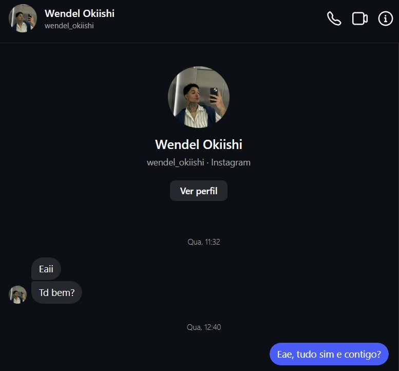
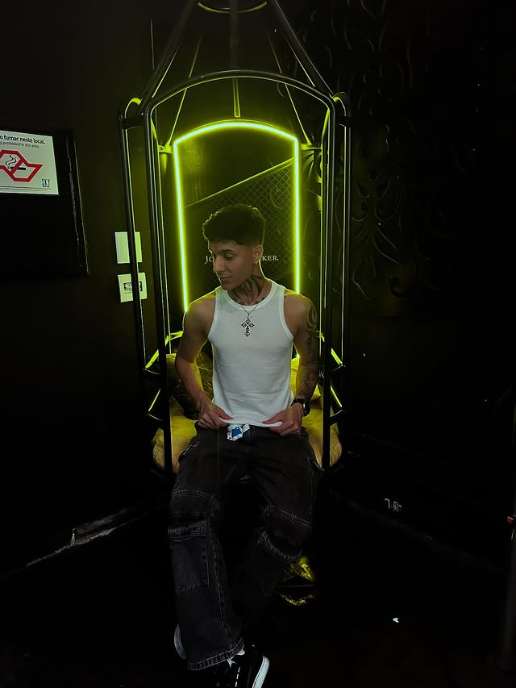
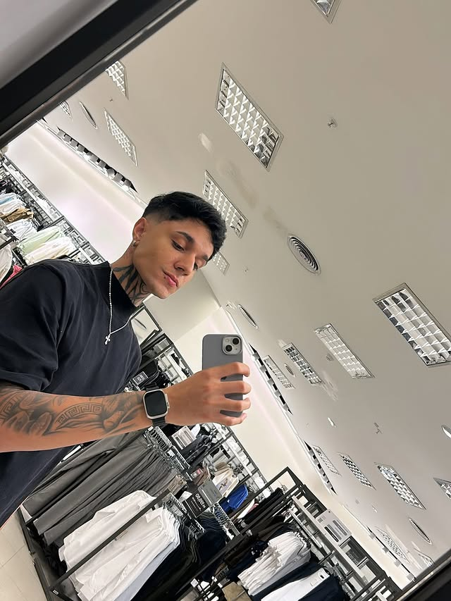

Tudo começou no dia 17/06/2026...

Não sei para onde vamos ou o que vamos ser, mas saiba que você é alguém especial para mim. Por mais que eu não saiba demonstrar e tudo seja complicado, obrigado por me entender e estar aqui. Independente do amanhã... Que as lágrimas derramadas, que enxuguei com minhas próprias mãos naquele dia não tenham sido em vão. Enquanto eu encarava você com uma brisa leve, parecia que nada mais importava. Como se qualquer problema deixasse de existir. Vi alguém que, mesmo vindo de uma criação diferente, religião diferente, hábitos diferentes, estava disposto a abrir mão de coisas importantes para tentar fazer dar certo. Vi verdade. Vi sinceridade. Vi bondade nos seus olhos e nas suas palavras.
Talvez ainda seja cedo para entender o que somos. Mas não foi cedo demais para perceber que você se tornou alguém importante. Independentemente do caminho, você marcou algo em mim.


Talvez o futuro ainda esteja escrevendo nossos nomes em páginas que ainda não conseguimos enxergar. Talvez amanhã traga respostas. Talvez traga novas perguntas. Mas existe algo que ninguém pode apagar: o instante em que dois olhares se encontraram e decidiram permanecer. Se o futuro for nosso, estaremos lá. Se não for, ainda assim terá valido cada segundo.